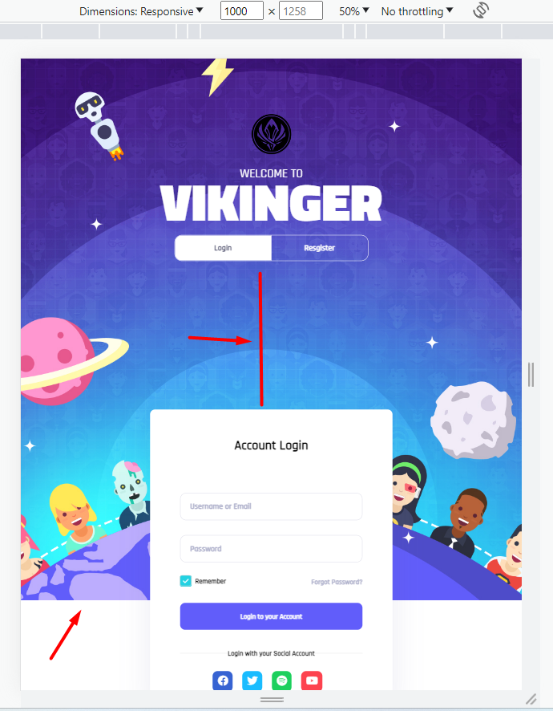

Note:
Sớm nhất *
Bài làm rất tốt*
Những lưu ý và lỗi chung trong toàn bài
Tất cả các button đang có font-family chưa đúng. Bài tập buổi 11 trước cũng đã chỉ ra lỗi này, bạn cần chú ý set css thêm font-family cho những phần tử có font mặc định như "button", "input", "select", "textarea". Chưa xử lý hover vào button submit form đổi màu background.
Cả 2 form: còn đang thiếu box-shadow và cần thêm giá trị name cho các input. Ở Form Register, ô input "Your Email" nên để type="email".
Các chữ label ở trong cả 2 form chưa đúng font-weight, cần đậm hơn.
Phần input:checkbox ở 2 form cần được checked ngay từ đầu.
Ở từng màn hình
[x] Bài 1: min-width: 1501px
Bài làm rất tốt *
[x] Bài 2: min-width: 1365px
Bài làm rất tốt
Khoảng cách giữa các nội dung ở trong div.content chưa đúng. Ở màn hình này những khoảng cách nhỏ hơn màn min-width:1501px.
[x] Bài 3: min-width: 601px
Bài làm rất tốt *
Khoảng cách giữa phần heading và btn đang nhỏ hơn bài mẫu.
[x] Bài 4: min-width: 501px
Bài làm rất tốt *
Lỗi tương tự Bài 4.
[x] Bài 5: max-width: 500px
Bài làm rất tốt
Lỗi tương tự Bài 4.
Khoảng cách giữa btn và form chưa đúng. Ở màn hình này, khoảng cách giữa 2 phần này nhỏ hơn màn min-width:501px
Khoảng padding của form đang nhỏ hơn bài mẫu. Ở màn hình này padding của form không đổi so với màn min-width:501px
[x] Đánh giá chung bài tập về nhà: Bài làm rất tốt *
Cần chú ý kỹ hơn các thay đổi style của từng phần tử khi ở mỗi màn hình để bài responsive hoàn thiện hơn.
Bài làm tốt
Những lưu ý và lỗi chung trong toàn bài
Phần tab-switch đang có kích thước chưa giống như bài mẫu.
Cả 2 form: còn đang thiếu box-shadow và cần thêm giá trị name cho các input. Phần Form Login, ô input "Username or Email" nên để type="text" thay vì type="email", vì ô input này có thể nhập vào username là dạng text.
Phần input:checkbox ở 2 form cần được checked ngay từ đầu giống bài mẫu.
Chưa xử lý css khi hover vào: forgot-password-link và ở mỗi social-link.
Ở các ô input, màu border chưa đúng khi đã có giá trị và đang không focus.
Ở từng màn hình
[x] Bài 1: min-width: 1501px
Bài làm tốt
Thiếu phần background màu trắng, hình một phần hình tròn, nằm bên phải của trang.
Cả 2 Form đang căn không đúng như bài mẫu. Ở bài mẫu là 2 form luôn nằm ở giữa theo chiều dọc.
[x] Bài 2: min-width: 1366px (bài mẫu là min-width: 1365px)
Bài làm tốt
Cả 2 Form đang căn không đúng như bài mẫu. Ở bài mẫu là 2 form luôn nằm giữa theo chiều dọc.
Khoảng cách giữa h1 và landing-info__desc chưa đúng. Ở màn hình này, khoảng cách giữa 2 phần này nhỏ hơn màn min-width: 1501px.
[x] Bài 3: min-width: 601px
Bài làm chưa tốt
Khoảng cách giữa tab-switch và phần form đang nhỏ hơn bài mẫu.
Kích thước 2 form đang full màn hình là chưa đúng. Ở bài mẫu width không full màn hình.
[x] Bài 4: min-width: 501px
Bài làm chưa tốt
Lỗi tương tự như Bài 3
[x] Bài 5: max-width: 500px
Bài làm chưa tốt
Lỗi tương tự như Bài 3. Và Kích thước của tab-switch đang full màn hình là chưa đúng. Ở bài mẫu width không full màn hình.
[x] Đánh giá chung bài tập về nhà: Bài làm chưa tốt, cần quan sát kỹ hơn bài mẫu về các vị trí, style của các phần tử ở từng màn hình để làm responsive hoàn thiện hơn.
Bài làm rất tốt *
Những lưu ý và lỗi chung trong toàn bài
Thiếu phần hình ảnh logo.
Trừ h1, toàn bộ phần chữ trong bài đang có font-family chưa đúng. Trừ màn hình max-width: 500px, chữ ở info__text ở các màn hình khác đều đang có kiểu chưa đúng, ở bài mẫu là kiểu chữ in hoa.
Cả 2 form: còn đang thiếu box-shadow và cần thêm giá trị name cho các input. Chú ý cần để type cho các ô input đúng với giá trị nhập vào. Ở form Register, chưa xử lý hover đổi màu background cho button:submit.
Phần input:checkbox ở 2 form cần được checked ngay từ đầu giống bài mẫu. Cần thêm giá trị name, và đang có lỗi khi click vào hình ô checkbox thì không được checked.
Chưa xử lý css khi hover vào: forgot-password-link và ở mỗi social-link.
Ở từng màn hình
[x] Bài 1 min-width: 1501px
Bài làm rất tốt *
[x] Bài 2 min-width: 1365px
Bài làm rất tốt *
Khoảng cách giữa các nội dung ở trong div.info chưa đúng. Ở màn hình này những khoảng cách nhỏ hơn màn min-width:1501px.
[x] Bài 3 min-width: 601px
Bài làm rất tốt *
[x] Bài 4 min-width: 501px
Bài làm rất tốt *
[x] Bài 5 max-width: 500px
Bài làm rất tốt *
[x] Đánh giá chung bài tập về nhà: Bài làm rất tốt *, cần quan sát kỹ hơn bài mẫu về style của các phần tử, để bài hoàn thiện hơn.
Bài làm chưa tốt
Những lưu ý và lỗi chung trong toàn bài
Nên dùng thẻ HTML heading cho các phần chữ mang ý nghĩa là head title như phần chữ "Vikinger, Account Login, Create your Account!"
Những phần chữ có font-weight:700 chưa đúng, do chưa import font-weight:700 vào. font-weight thực tế đang ăn trên bài là font "Rajdhani Medium" là 500.
Những phần chữ màu đen đậm trong form có mã màu chưa đúng với bài mẫu.
Phần button submit ở 2 form cần thêm css bỏ outline để đúng với bài mẫu.
Phần input:checkbox ở cả 2 form, kích thước của ô checkbox khi checked và uncheck chưa khớp với nhau, đang bị dư border khi checked.
Phần icon social: Kích thước chưa đúng, ở bài mẫu là hình vuông. Chưa xử lý hover vào các icon.
Phần infor không nên set margin là giá trị tương đối bằng %. Nên set giá trị tuyệt đối để giống bài mẫu hơn. Chỉ nên set margin-bottom ở para hoặc ở margin-top ở btn, không nên để cả 2 vì set cả 2 như trong bài thì nó chỉ ăn margin nào có giá trị lớn hơn.
Ở từng màn hình
[x] Bài 1 min-width: 1501px
Bài làm rất tốt
[x] Bài 2 min-width: 1365px
Bài làm tốt
Khoảng cách giữa infor và form đang quá xa nhau.
Khoảng cách giữa các phần tử của infor đang lớn hơn bài mẫu.
[x] Bài 3 min-width: 601px
Bài làm chưa tốt
Ảnh background không full nội dung bên trong.
Khoảng cách lệch quá nhiều.

[x] Bài 4 min-width: 501px
Chưa làm responsive ở màn này.
[x] Bài 5 max-width: 500px
Chưa làm responsive ở màn này.
[x] Đánh giá chung bài tập về nhà: Bài làm chưa tốt, chưa hoàn thiện. Cần chú ý kỹ hơn bài mẫu để xác định hết các breakpoint, các style thay đổi của mỗi phần tử khi ở từng màn hình để làm responsive tốt hơn.
Bài làm chưa tốt
Những lưu ý và lỗi chung trong toàn bài
Phần chữ h1 chưa đúng font-size.
Phần page-infor__click chưa active label login ngay từ đầu, khoảng click được ở các nút đang quá hẹp, phải lick trúng chữ thì mới checked. Icon hình bàn tay không xuất hiện khi hover vào chữ. Nên css phần click được, và hình icon bàn tay khi hover cho cả cái nút. Cần thêm transition để nhìn hiệu ứng được mượt hơn khi click vào nút.
Phần page-form và các nút ở trong page-infor__click set width có giá trị % là chưa đúng, vì chỉ trừ màn hình "max-width:600px" ra thì ở những màn lớn hơn width của những phần này được cố định.
Trừ màn max-width: 500px ra, thì ở các màn hình còn lại padding của 2 form đang nhỏ hơn nhiều so với bài mẫu.
Những phần form-head trong form có mã màu chưa đúng như bài mẫu.
Cả 2 form: còn đang thiếu box-shadow và cần thêm giá trị name cho các input.
Phần input:checkbox ở 2 form có font-family chưa đúng. Khi checked, hình icon checked đang bị lệch, ô checkbox dư border và chưa có transition. Form Login phần input:checkbox chưa được checked ngay từ đầu như bài mẫu.
Phần .login-links > a có font-family chưa đúng. Chưa xử lý hover.
Phần button submit ở 2 form có font-family chưa đúng.
Chưa xử lý css khi hover vào các link trong social-icon.
Chưa có hiệu ứng show/hide cho form.
Ở từng màn hình
[x] Bài 1 min-width: 1501px
Bài làm tốt
Thiếu phần background màu trắng, hình một phần hình tròn, nằm bên phải của trang.
[x] Bài 2 min-width: 1365px
Bài làm chưa tốt
Chưa làm responsive màn này
Dư phần ảnh rocket từ màn hình này trở xuống.
[x] Bài 3 min-width: 601px (bài bạn sẽ là max-width:1200px)
Bài làm chưa tốt
Chưa chưa được responsive giống như bài mẫu do kích thước đang để width có giá trị % như đã nhận xét trên.
[x] Bài 4 min-width: 501px
Bài làm tốt
[x] Bài 5 max-width: 500px
Bài làm chưa tốt
Chưa làm responsive màn này
[x] Đánh giá chung bài tập về nhà: Bài làm chưa tốt, chưa hoàn thiện. Cần chú ý kỹ hơn bài mẫu để xác định hết các breakpoint, các style thay đổi của mỗi phần tử khi ở từng màn hình để làm responsive tốt hơn.
Bài làm chưa tốt
Những lưu ý và lỗi chung trong toàn bài
Xuất hiện thanh cuộn ngang do đang set landing có width:100vw. Nên set là 100%.
Ở các màn hình lớn, phần background đang không auto chiếm hết chiều dọc màn hình mà phụ thuộc theo height của phần .landing .wapper. Phần .wapper đang được set kích thước và, vị trí chưa đúng, ở bài mẫu kích thước của form là auto, vị trí là luôn nằm giữa theo chiều dọc, và Chưa có khoảng cách dưới giữa wapper và cha. Tương tự thì phần decor-landing đang set height:65vw cũng không đảm bảo sẽ có chiều cao chiếm full màn hình.
Cần thêm transition cho các nút trong switch để nhìn được mượt hơn khi lick.
Form Register chưa có border-radius. Phần input:checkbox ở cả 2 from chưa được checked ngay từ đầu, ô checkbox thừa border khi được checked.
Cần thêm giá trị name cho các input.
Ở từng màn hình
[x] Bài 1 min-width: 1501px
Bài làm chưa tốt
Có những lưu ý và lỗi chung ở trên.
[x] Bài 2 min-width: 1365px
Bài làm chưa tốt
Có những lưu ý và lỗi chung ở trên. Và khoảng cách trên dưới giữa các nội dung trong company-info ở màn hình này đang lớn hơn bài mẫu.
[x] Bài 3 min-width: 601px
Bài làm rất tốt *
Khoảng cách giữa switch và form đang lớn hơn bài mẫu.
[x] Bài 4 min-width: 501px
Bài làm chưa tốt
width của form chưa đúng, ở màn hình này form có width sẽ thay đổi linh hoạt tỉ lệ theo màn hình. Ở bài mẫu được set là width:90%.
Khoảng cách giữa switch và form đang lớn hơn bài mẫu.
[x] Bài 5 max-width: 500px
Khoảng cách giữa switch và form đang lớn hơn bài mẫu.
width của form chưa đúng, ở màn hình này form có width sẽ thay đổi linh hoạt tỉ lệ theo màn hình. Ở bài mẫu được set là width:90%.
[x] Đánh giá chung bài tập về nhà: ài làm chưa tốt, cần quan sát kỹ hơn bài mẫu về các vị trí, style của các phần tử ở từng màn hình để làm responsive tốt hơn.
Bài làm chưa tốt.
Những lưu ý và lỗi chung trong toàn bài
Cần thêm background-size cho ảnh background body, vì ở màn hình có kích thước lớn hơn ảnh thì ảnh không full màn hình.
Khoảng cách trên dưới của các phần tử trong landing__info chưa giống với bài mẫu.
Phần chữ h1 có font-size chưa giống với bài mẫu. Phần landing__info__desc__lap có line-height chưa giống với bài mẫu.
Phần tab-switch: Lỗi click vào nút nào cũng có thể show/hide cả 2 form. Chữ của nút Login lúc không active, có màu chưa đúng.
Các thay đổi style: nút tab-switch, form khi show/hide, input:checkbox chưa có transition.
Ở màn hình lớn, thiếu icon hình tên lửa ở góc trên trái của form.
Chỉ trừ màn hình "max-width:600px" ra thì ở những màn lớn hơn set width có giá trị % là chưa đúng, vì width các thành phần ở những màn lớn này được cố định.
Form chưa style giống bài mẫu:
Set height cứng nên chiều cao của form không giống bài mẫu, khoảng cách đệm trên dưới của form chưa đúng. Chiều cao của input đang nhỏ hơn, Khoảng cách giữa các input đang lớn hơn, lúc nhập giá trị vào input, và không focus thì chữ label đang đè lên chữ ô input.
Phần input:checkbox lúc được checked, đang lệch và thừa border. Khi click vào chữ thì không check được.
Chưa xử lý hover vào: button submit ở 2 form, và link Forgot Password?.
Ở từng màn hình
[x] Bài 1 min-width: 1501px
Bài làm chưa tốt. Có những lỗi chung trên và thiếu phần background màu trắng, hình một phần hình tròn, nằm bên phải của trang.
[x] Bài 2 min-width: 1365px
Bài làm chưa tốt. Có những lỗi chung trên.
[x] Bài 3, 4, 5: Các màn hình min-width: 601px, min-width: 501px, max-width: 500px
Bài làm chưa tốt. Xác định sai breakpoint. ở bài mẫu là từ các màn "bé hơn 1365px" sẽ chuyển đổi bố cục các phần, bạn đang làm các màn "bé hơn 1100px". Lỗi phần ảnh background, kích thước của form do width set % như đã nói ở trên phần lỗi chung.
[x] Đánh giá chung bài tập về nhà: Bài làm chưa tốt, chưa hoàn thiện. Cần chú ý kỹ hơn bài mẫu để xác định hết các breakpoint, các style thay đổi của mỗi phần tử khi ở từng màn hình để làm responsive tốt hơn.